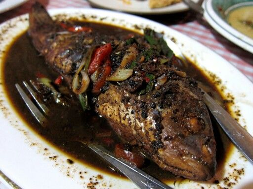
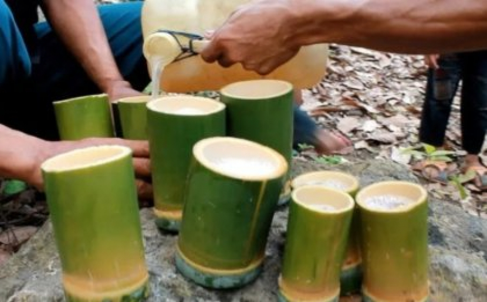
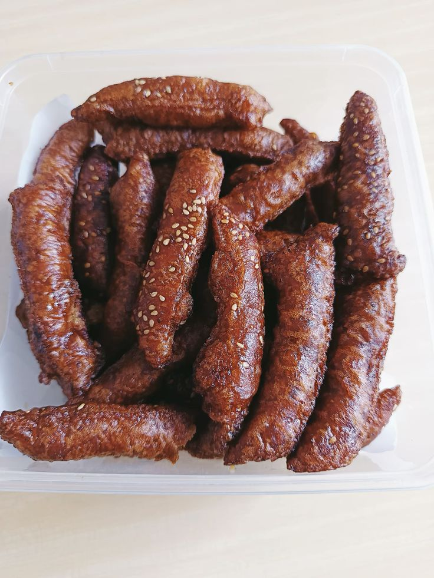
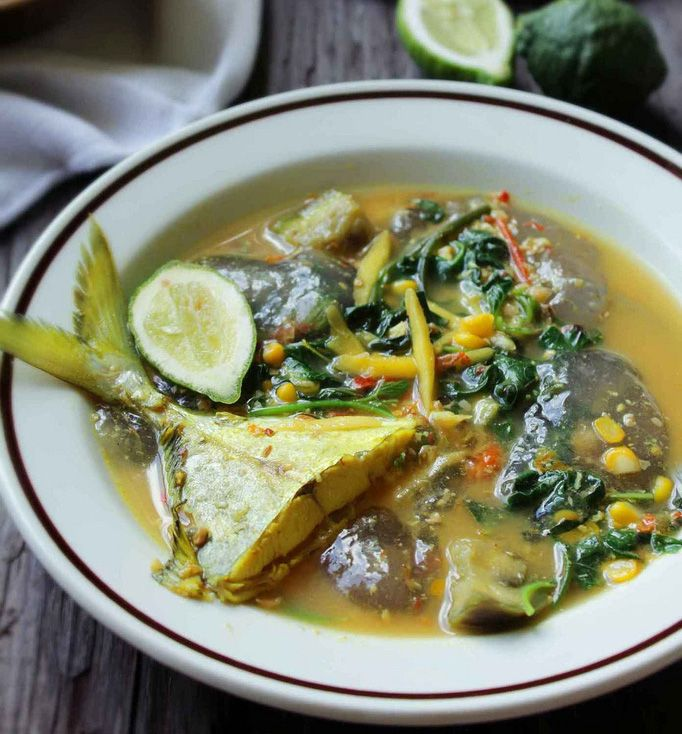
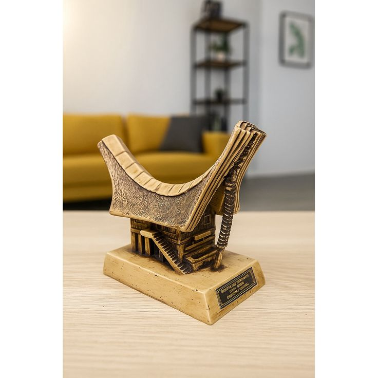
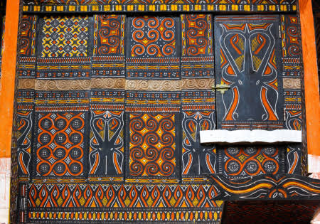
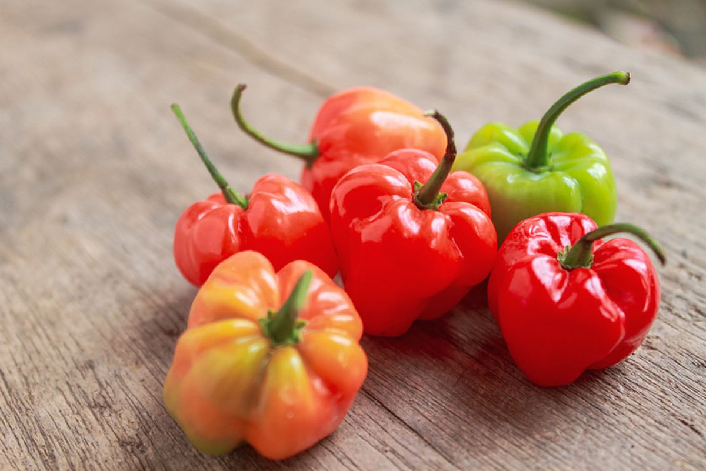

×

Jelajahi kelezatan rasa dan bawa pulang kehangatan dari Toraja
| Kategori | Rekomendasi Tempat | Kisaran Harga | Jenis Makanan | Lokasi | Rating | Fasilitas |
|---|---|---|---|---|---|---|
| Pedagang Kaki Lima | Bakso Lapangan Bakti | Rp 10rb - 25rb | Nasional | Rantepao | 4.2/5 | Area Terbuka |
| Rumah Makan Lokal | RM. Rimiko / RM. Mambo | Rp 30rb - 80rb | Tradisional Toraja | Jl. Andi Mappanyukki | 4.1/5 | Parkir, Toilet |
| Cafe & Bistro | Kaana Toraja Coffee | Rp 40rb - 100rb | Nasional & Western | Pusat Rantepao | 4.8/5 | WiFi, AC, Musik |
| Restoran Hotel | Toraja Heritage Resto | Rp 150rb - 300rb | Internasional | Karassik | 4.1/5 | View Alam, Lounge |
Klik gambar untuk lihat penjelasan lebih rinci

Daging yang dimasak di dalam bambu dengan bumbu rempah dan daun miana yang gurih.

Masakan khas menggunakan kluwek hitam yang memberikan cita rasa kuat dan unik.

Kopi dengan aroma rempah khas pegunungan dan tingkat keasaman yang seimbang.

Minuman tradisional dari nira pohon aren khas masyarakat Toraja.

Kue manis tradisional berbahan dasar tepung beras dan gula merah dengan taburan wijen.

Sup sagu dengan sayuran, ikan atau ayam, dan bumbu asam pedas.
Bawa pulang kenangan dari Tana Toraja. Klik gambar untuk detail.
Kopi Arabika dengan aroma rempah yang unik dan kuat. Wajib beli langsung dari petani.

Camilan renyah kacang tanah berbalut karamel manis.

Hiasan dekoratif kayu yang diukir tangan menyerupai rumah adat asli.

Kain tenun tradisional dengan motif khas dan beragam, dibuat manual.

Papan kayu dengan ukiran motif tradisional 4 warna yang punya makna filosofis.

Cabai kering tumbuk khas Toraja, super pedas untuk sambal dan bumbu masak.
Pusat perdagangan kerbau, babi, serta tempat berburu jajanan pasar tradisional Toraja.